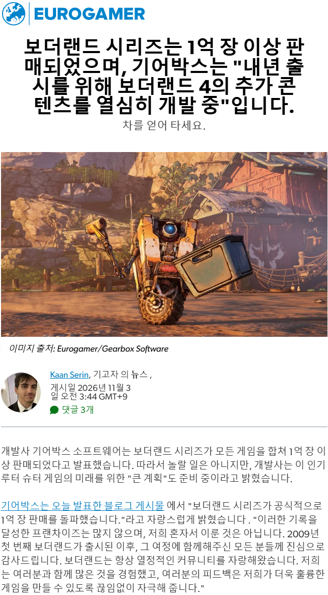

4편 이상함? 이마트에서 살까했었는데. 2~3편 재밌게 함. 스토리는 모르겠고 개드립은 좋아했음
1. 4편부터 구동에 필요한 사양이 수직 상승
2. 오픈 월드로 인해 뭔가 월드가 조금 조잡해짐 ( 개인적 견해 )
3. 월드와 적들이 잘 구분이 안감 정신 없이 싸우는 와중에도 확실히 보고 조준하기보다 그저 레이더에 뜨는 적 위치를 감으로 인식하고 싸워야됨 ( 이게 제일 큼. 레딧에도 비슷한 불만 다수 확인함 )
4. 위의 문제들로 인해 3만원 정도 하면 살만 한 듯 ( 나는 스팀에서 정가주고 샀음. 정가는 아까운 게임 )
레이더보고 찾는거 씹인정 ㅋㅋㅋ
오 ㄳㄳ 2만5천원 인것 같은데 해봐야지. 내 컴이 병신이라 플5로 할 생각
이전 2편은 콘솔로도 했고
오늘 살까 했는데 고맙다..
너무 공감... 보더랜드 시리즈 광팬으로서 2편은 그냥 우주 명작이고 한시도 게임을 놓을 수 없는 수준이었고 3편도 전투 진행되는 그 구간들, 파밍하는 구간들은 진짜 재밌었음.(스토리는 그냥 관심 끄면서 했음. 그런데도 한번씩 짜증난더라). 근데 4편은 뭔가 던전을 얕게 흩뿌려놓은 느낌이 자꾸 들어서... 마치 다크소울1,3 하다가 엘든링하는 느낌인데 엘든링은 그 하나하나의 던전들 완성도가 높아서 좀 나았지 보더4는 좀 그럼;
1인칭 멀미 있어서 FPS절대 안하는데 그래도 어떻게 엔딩까지 봄ㄹㅇ
1,2프리시퀄은 좋았고 3,4,는 별로였다
1 2 3 프퀄 다 샀는데 4는 안삼
3은 한글화 때문에 2번 샀네
1편은 명작, 2편은 수작, 3편은 팬심으로 평작, 4편은 망작
2편 타이니 티나 dlc 는 광광 울면서 했는데 시발 PC랑 동성애좀 적당히 쳐넣지 갈수록 심해져
1억장 팔린거에서 2,3 편 비중이 클 듯
3편에 논바이너리 캐릭터 존나 뜬금포였음
목시 디엘씨도 재밋게 했고 롤랜드 the white knight가 진짜 존나 웃겼는데 ㅋㅋㅋ ㅋㅋㅋ 난 보더랜드 코드가 좀 잘 맞더라고
난 2편도 명작 주고싶음. 심지어 ps vita로 했었는데도... 밀리제로 진짜 너무 재밌었음. 이때 게임 보는 고점이 높아져서 다른 게임들은 다 재미없어질 정도
프리시퀄이 은근 재밋는데 언급이 별로 없는데 의아해
볼륨이 작긴해도 진짜 재밋엇는데 윽히 아테나
솔까 이 시리즈는 1,2 프리시퀄만 하면 됨 이후론 발전이 없음
ㅇㅈ
3 PC 에픽독점할때도 이거 하겠다고 에픽에서 사서 했는데 존나 실망하고 시리즈 하차함
보더랜드 학생시절 인방으로 보다가 3에 입문 햇는데 그렇게 될 줄 몰랏제~
보더랜드4 출시하자마자 구매해서
20시간 달리고 유기함...
게임은 꽤 잘 만든거 같은데 화풍이 진짜 취향에 안맞더라, 난 이상하게 카툰풍의 그래픽이 안이뻐보임,
극화체라 더 그런듯?
1편 뭔가 주연들이 난 이렇게 상또라이야! 라고 하는 게 좀 오글거려서 초반에 접었는데
계속 스토리 밀다보면 감동이 느껴질까...
보더랜드 스토리들 pc가 너무 심해서 거부감 좆같이들긴하던데
보더랜드는 너무 어려워서 못하겠어
3까지는 별로 안 어려움 만약 4가 아니라 2~3도 어렵다고 느꼈다면 렙업, 파밍 안 하고 걍 스토리만 쭈욱 밀어서 케릭, 무기 레벨이 안 맞았을 가능성이 높다고 본다
1, 프리시퀄 다 깨고 2는 하다 말았는데 3도 꽤 재밌게 했음.
난 4도 재밌게 했었는데 평가가 안좋네
1,2,프리시퀄 갓겜 근데 어려움. 3은 난이도 확낮아지고 파밍좋아짐 씨발련들이 pc에 절여짐 4는 사양높고 정신없는데 오픈월드가됨
개인적으로 2,3편(스토리 제외)이 재밋었는데
4편은 하... 총체적 난국임...